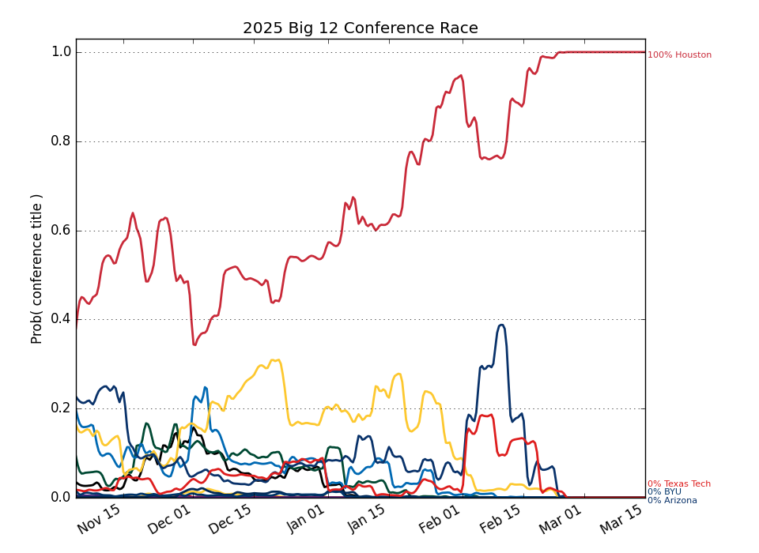
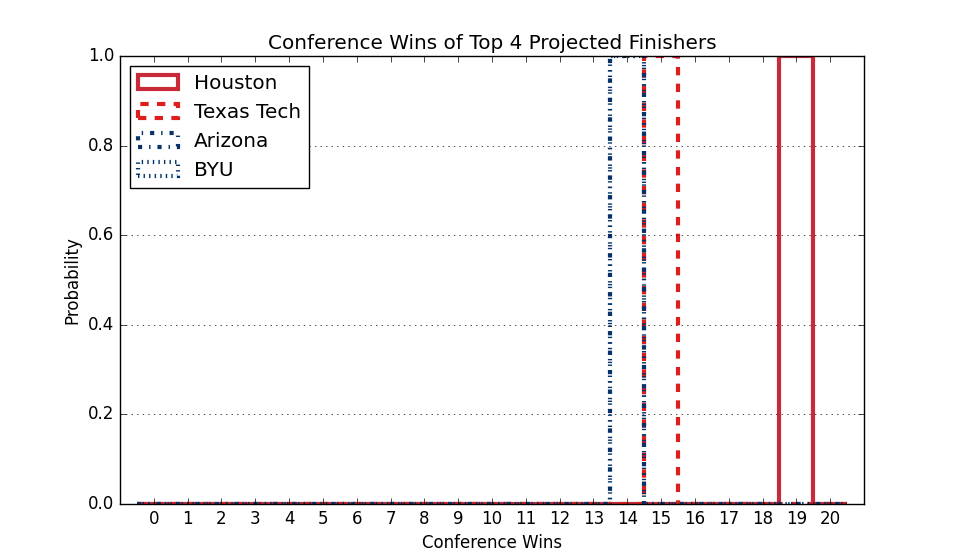

Big 12
Updated with games through Monday, April 07
Conference Projections
Based on 10,000 simulations of the remaining season.
Tiebreaking was done using the
Big Ten tiebreaking procedures.
| Big 12 |
Current Record |
Projected Record |
Projected Finish (% odds, with tiebreakers) |
|
Team |
Conf. |
Overall |
Conf. |
Overall |
1st | 2nd | 3rd | 4th | 5th | 6th | 7th | 8th | 9th | 10th | 11th | 12th | 13th | 14th | 15th | 16th |
| 1. |
Houston (2) |
19 - 1 |
35 - 5 |
19.0 - 1.0 |
35.0 - 5.0 |
100.0 | | | | | | | | | | | | | | | |
| 2. |
Texas Tech (8) |
15 - 5 |
28 - 9 |
15.0 - 5.0 |
28.0 - 9.0 |
| 100.0 | | | | | | | | | | | | | | |
| 3. |
Arizona (9) |
14 - 6 |
24 - 13 |
14.0 - 6.0 |
24.0 - 13.0 |
| | 100.0 | | | | | | | | | | | | | |
| 4. |
BYU (23) |
14 - 6 |
26 - 10 |
14.0 - 6.0 |
26.0 - 10.0 |
| | | 100.0 | | | | | | | | | | | | |
| 5. |
Iowa St. (10) |
13 - 7 |
25 - 10 |
13.0 - 7.0 |
25.0 - 10.0 |
| | | | 100.0 | | | | | | | | | | | |
| 6. |
Kansas (22) |
11 - 9 |
21 - 13 |
11.0 - 9.0 |
21.0 - 13.0 |
| | | | | 100.0 | | | | | | | | | | |
| 7. |
Baylor (24) |
10 - 10 |
19 - 15 |
10.0 - 10.0 |
19.0 - 15.0 |
| | | | | | 100.0 | | | | | | | | | |
| 8. |
West Virginia (48) |
10 - 10 |
19 - 13 |
10.0 - 10.0 |
19.0 - 13.0 |
| | | | | | | 100.0 | | | | | | | | |
| 9. |
TCU (84) |
9 - 11 |
16 - 16 |
9.0 - 11.0 |
16.0 - 16.0 |
| | | | | | | | 100.0 | | | | | | | |
| 10. |
Kansas St. (75) |
9 - 11 |
16 - 17 |
9.0 - 11.0 |
16.0 - 17.0 |
| | | | | | | | | 100.0 | | | | | | |
| 11. |
Utah (73) |
8 - 12 |
16 - 17 |
8.0 - 12.0 |
16.0 - 17.0 |
| | | | | | | | | | 100.0 | | | | | |
| 12. |
UCF (72) |
7 - 13 |
20 - 17 |
7.0 - 13.0 |
20.0 - 17.0 |
| | | | | | | | | | | 100.0 | | | | |
| 13. |
Cincinnati (42) |
7 - 13 |
19 - 16 |
7.0 - 13.0 |
19.0 - 16.0 |
| | | | | | | | | | | | 100.0 | | | |
| 14. |
Oklahoma St. (97) |
7 - 13 |
17 - 18 |
7.0 - 13.0 |
17.0 - 18.0 |
| | | | | | | | | | | | | 100.0 | | |
| 15. |
Arizona St. (68) |
4 - 16 |
13 - 20 |
4.0 - 16.0 |
13.0 - 20.0 |
| | | | | | | | | | | | | | 100.0 | |
| 16. |
Colorado (79) |
3 - 17 |
14 - 21 |
3.0 - 17.0 |
14.0 - 21.0 |
| | | | | | | | | | | | | | | 100.0 |
Weekly Changes |
| 1. |
Houston (2) |
|
+0.0 | +0.0 | +0.0 | +0.0 | +0.0 | +0.0 | +0.0 | +0.0 | +0.0 | +0.0 | +0.0 | +0.0 | +0.0 | +0.0 | +0.0 | +0.0 |
| 2. |
Texas Tech (8) |
|
+0.0 | +0.0 | +0.0 | +0.0 | +0.0 | +0.0 | +0.0 | +0.0 | +0.0 | +0.0 | +0.0 | +0.0 | +0.0 | +0.0 | +0.0 | +0.0 |
| 3. |
Arizona (9) |
|
+0.0 | +0.0 | +0.0 | +0.0 | +0.0 | +0.0 | +0.0 | +0.0 | +0.0 | +0.0 | +0.0 | +0.0 | +0.0 | +0.0 | +0.0 | +0.0 |
| 4. |
BYU (23) |
|
+0.0 | +0.0 | +0.0 | +0.0 | +0.0 | +0.0 | +0.0 | +0.0 | +0.0 | +0.0 | +0.0 | +0.0 | +0.0 | +0.0 | +0.0 | +0.0 |
| 5. |
Iowa St. (10) |
|
+0.0 | +0.0 | +0.0 | +0.0 | +0.0 | +0.0 | +0.0 | +0.0 | +0.0 | +0.0 | +0.0 | +0.0 | +0.0 | +0.0 | +0.0 | +0.0 |
| 6. |
Kansas (22) |
|
+0.0 | +0.0 | +0.0 | +0.0 | +0.0 | +0.0 | +0.0 | +0.0 | +0.0 | +0.0 | +0.0 | +0.0 | +0.0 | +0.0 | +0.0 | +0.0 |
| 7. |
Baylor (24) |
|
+0.0 | +0.0 | +0.0 | +0.0 | +0.0 | +0.0 | +0.0 | +0.0 | +0.0 | +0.0 | +0.0 | +0.0 | +0.0 | +0.0 | +0.0 | +0.0 |
| 8. |
West Virginia (48) |
|
+0.0 | +0.0 | +0.0 | +0.0 | +0.0 | +0.0 | +0.0 | +0.0 | +0.0 | +0.0 | +0.0 | +0.0 | +0.0 | +0.0 | +0.0 | +0.0 |
| 9. |
TCU (84) |
|
+0.0 | +0.0 | +0.0 | +0.0 | +0.0 | +0.0 | +0.0 | +0.0 | +0.0 | +0.0 | +0.0 | +0.0 | +0.0 | +0.0 | +0.0 | +0.0 |
| 10. |
Kansas St. (75) |
|
+0.0 | +0.0 | +0.0 | +0.0 | +0.0 | +0.0 | +0.0 | +0.0 | +0.0 | +0.0 | +0.0 | +0.0 | +0.0 | +0.0 | +0.0 | +0.0 |
| 11. |
Utah (73) |
|
+0.0 | +0.0 | +0.0 | +0.0 | +0.0 | +0.0 | +0.0 | +0.0 | +0.0 | +0.0 | +0.0 | +0.0 | +0.0 | +0.0 | +0.0 | +0.0 |
| 12. |
UCF (72) |
|
+0.0 | +0.0 | +0.0 | +0.0 | +0.0 | +0.0 | +0.0 | +0.0 | +0.0 | +0.0 | +0.0 | +100.0 | +0.0 | -100.0 | +0.0 | +0.0 |
| 13. |
Cincinnati (42) |
|
+0.0 | +0.0 | +0.0 | +0.0 | +0.0 | +0.0 | +0.0 | +0.0 | +0.0 | +0.0 | +0.0 | -100.0 | +100.0 | +0.0 | +0.0 | +0.0 |
| 14. |
Oklahoma St. (97) |
|
+0.0 | +0.0 | +0.0 | +0.0 | +0.0 | +0.0 | +0.0 | +0.0 | +0.0 | +0.0 | +0.0 | +0.0 | -100.0 | +100.0 | +0.0 | +0.0 |
| 15. |
Arizona St. (68) |
|
+0.0 | +0.0 | +0.0 | +0.0 | +0.0 | +0.0 | +0.0 | +0.0 | +0.0 | +0.0 | +0.0 | +0.0 | +0.0 | +0.0 | +0.0 | +0.0 |
| 16. |
Colorado (79) |
|
+0.0 | +0.0 | +0.0 | +0.0 | +0.0 | +0.0 | +0.0 | +0.0 | +0.0 | +0.0 | +0.0 | +0.0 | +0.0 | +0.0 | +0.0 | +0.0 |
This table gives the probability of earning at least a share of a given place.
So there are no tiebreakers and there can be multiple first place teams, for example.


This Week's Games
| Date |
Away |
W Prob, Pred Score |
Home |